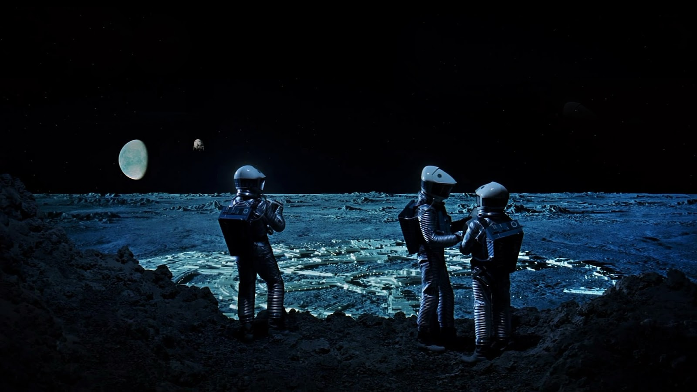
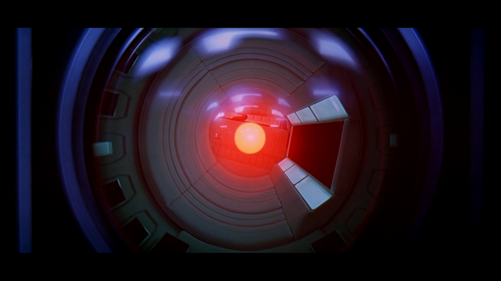
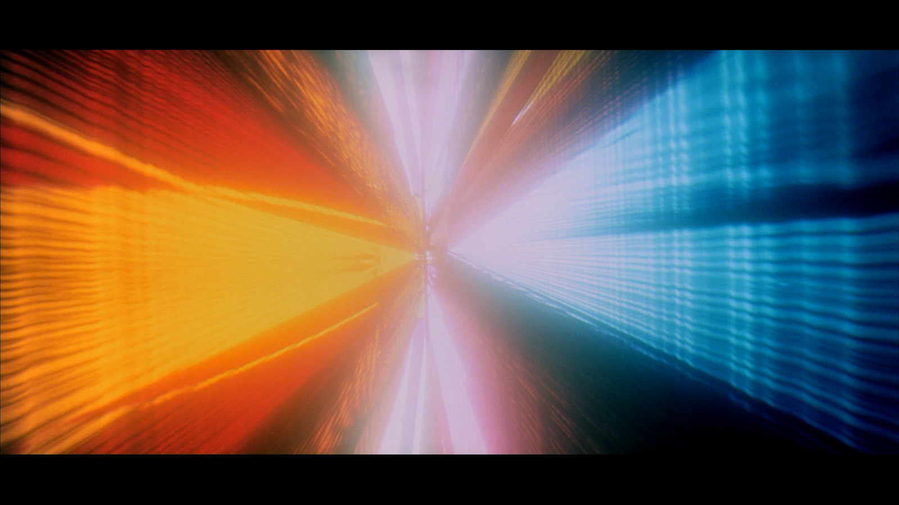
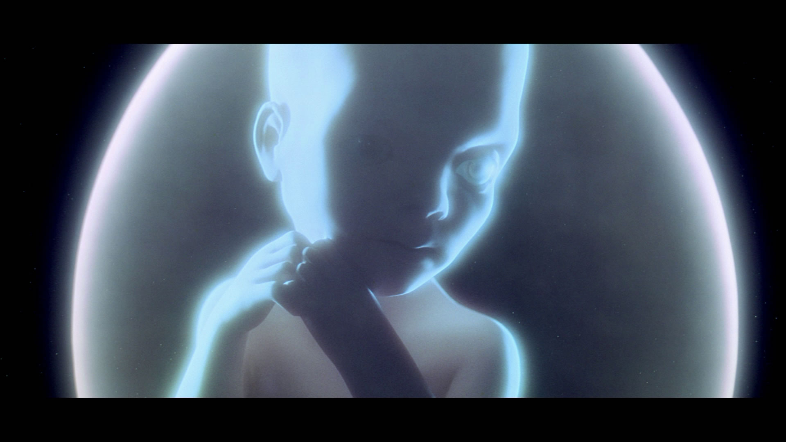

Overview
2001: A Space Odyssey is a 1968 epic science fiction film produced and directed by Stanley Kubrick. The screenplay was written by Kubrick and Arthur C. Clarke, and was inspired by Clarke's short story "The Sentinel". A novel also called 2001: A Space Odyssey, written concurrently with the screenplay, was published soon after the film was released. The film, which follows a voyage to Jupiter with the sentient computer HAL after the discovery of a mysterious black monolith affecting human evolution, deals with themes of existentialism, human evolution, technology, artificial intelligence, and the possibility of extraterrestrial life. The film is noted for its scientifically accurate depiction of spaceflight, pioneering special effects, and ambiguous imagery. Sound and dialogue are used sparingly and often in place of traditional cinematic and narrative techniques. The soundtrack incorporates a number of pieces of classical music, among them Also sprach Zarathustra by Richard Strauss, The Blue Danube by Johann Strauss II, and works by Aram Khachaturian and György Ligeti.
2001: A Space Odyssey was financed and distributed by American studio Metro-Goldwyn-Mayer, but filmed and edited almost entirely in England, where Kubrick lived, using the facilities of MGM-British Studios and Shepperton Studios. MGM subcontracted the film to Kubrick's production company in order to qualify for the Eady Levy, a UK tax on box-office receipts used to fund the production of films in Britain at the time. The film received mixed reactions from critics and audiences upon its release, but garnered a cult following and became the highest-grossing North American film of 1968. It was nominated for four Academy Awards; Kubrick received one for his direction of visual effects. A sequel, 2010: The Year We Make Contact, directed by Peter Hyams, was released in 1984.
2001: A Space Odyssey is widely regarded as one of the greatest and most influential films ever made. In 1991, it was deemed "culturally, historically, or aesthetically significant" by the United States Library of Congress and selected for preservation in the National Film Registry. Sight & Sound magazine ranked 2001: A Space Odyssey sixth in the top ten films of all time in its 2002 and 2012 critics' polls editions; it also tied for second place in the magazine's 2012 directors' poll. In 2010, it was named the greatest film of all time by The Moving Arts Film Journal.
Plot
In an African desert millions of years ago, a tribe of hominids is driven away from its water hole by a rival tribe. They awaken to find a featureless black monolith has appeared before them. Seemingly influenced by the monolith, they discover how to use a bone as a weapon and drive their rivals away from the water hole.
Millions of years later, a Pan Am spaceplane carries Dr. Heywood Floyd to the huge Space Station V orbiting Earth for a layover on his trip to Clavius Base, a United States outpost on the Moon. After Floyd has a videophone call with his daughter, he deflects questions from his Soviet scientist friend and her colleague about rumors of a mysterious epidemic at Clavius. Floyd speaks to a meeting of Clavius personnel, apologizing for the epidemic cover story but stressing secrecy. His mission is to investigate a recently found artifact buried four million years ago near the crater Tycho. Floyd and others ride in a Moonbus to the artifact, a monolith identical to the one encountered by the ape-men. Sunlight strikes the monolith and a loud high-pitched radio signal is heard.
Eighteen months later, the United States spacecraft Discovery One is bound for Jupiter. On board are mission pilots and scientists Dr. David Bowman and Dr. Frank Poole, along with three other scientists in suspended animation. Most of Discovery's operations are controlled by the ship's computer, a HAL 9000 with a human personality that the crew calls "Hal". Hal says he is "foolproof and incapable of error". Hal raises concerns about the nature of the mission to Bowman, but their conversation is interrupted when Hal reports the imminent failure of an antenna control device. The astronauts retrieve it in an extravehicular activity (EVA) pod but find nothing wrong. Hal suggests reinstalling the device and letting it fail so the problem can be found. Mission Control advises the astronauts that results from their twin HAL 9000 indicate that Hal is in error about the device's imminent failure. Hal says the discrepancy must be due to human error. Concerned about Hal's behavior, Bowman and Poole enter an EVA pod to talk without Hal overhearing, and agree to disconnect Hal if he is proven wrong. Hal secretly follows their conversation by lip reading. While Poole is on a space walk outside his EVA pod attempting to replace the unit, Hal takes control of the pod, severs his oxygen hose and sets him adrift. Bowman takes another pod to rescue Poole.
Meanwhile, Hal turns off the life support functions of the crewmen in suspended animation. When Bowman returns to the ship with Poole's body, Hal refuses to let him in, stating that the astronauts' plan to deactivate him jeopardizes the mission. Bowman opens the ship's emergency airlock manually, enters the ship, and proceeds to Hal's processor core. Hal tries to reassure Bowman, then pleads with him to stop, and finally expresses fear. As Bowman gradually deactivates the circuits controlling Hal's higher intellectual functions, Hal regresses to his earliest programmed memory, the song "Daisy Bell", which he sings for Bowman. When Bowman disconnects Hal, a prerecorded video message from Floyd plays, revealing that the mission's true objective is to investigate a radio signal, sent from a lunar artifact (the monolith) to Jupiter. Only Hal and the hibernating crew had been told this.
At Jupiter, Bowman leaves Discovery One in an EVA pod to investigate another monolith orbiting the planet. The pod is pulled into a vortex of colored light, the Star Gate, and Bowman races across vast distances of space, viewing bizarre cosmological phenomena and strange landscapes of unusual colors.
Bowman finds himself in a bedroom appointed in the neoclassical style. He sees, and then becomes, older versions of himself, first standing in the bedroom, middle-aged and still in his spacesuit, then dressed in leisure attire and eating dinner, and finally as an old man lying in the bed. A monolith appears at the foot of the bed, and as Bowman reaches for it, he is transformed into a fetus enclosed in a transparent orb of light, the Star Child. The new being floats in space beside the Earth, gazing at it.
Legacy
The influence of 2001 on subsequent filmmakers is considerable. Steven Spielberg, George Lucas and others, including many special effects technicians, discuss the impact the film has had on them in a featurette titled Standing on the Shoulders of Kubrick: The Legacy of 2001, included in the 2007 DVD release of the film. Spielberg calls it his film generation's "big bang", while Lucas says it was "hugely inspirational", calling Kubrick "the filmmaker's filmmaker". Sydney Pollack calls it "groundbreaking", and William Friedkin says 2001 is "the grandfather of all such films". At the 2007 Venice film festival, director Ridley Scott said he believed 2001 was the unbeatable film that in a sense killed the science fiction genre. Similarly, film critic Michel Ciment in his essay "Odyssey of Stanley Kubrick" wrote, "Kubrick has conceived a film which in one stroke has made the whole science fiction cinema obsolete." Others credit 2001 with opening up a market for films such as Close Encounters of the Third Kind, Alien, Blade Runner, Contact, and Interstellar, proving that big-budget "serious" science-fiction films can be commercially successful, and establishing the "sci-fi blockbuster" as a Hollywood staple. Science magazine Discover's blogger Stephen Cass, discussing the film's considerable impact on subsequent science fiction, writes that "the balletic spacecraft scenes set to sweeping classical music, the tarantula-soft tones of HAL 9000, and the ultimate alien artifact, the Monolith, have all become enduring cultural icons in their own right."
2001 was No. 15 on AFI's 2007 100 Years ... 100 Movies (22 in 1998), was named No. 40 on its 100 Years, 100 Thrills, was included on its 100 Years, 100 Quotes (No. 78 "Open the pod bay doors, HAL."), and HAL 9000 was the No. 13 villain in 100 Years ... 100 Heroes and Villains. The film was also No. 47 on AFI's 100 Years ... 100 Cheers and the No. 1 science fiction film on AFI's 10 Top 10. 2001 is the only science fiction film to make the Sight & Sound in 2012 poll for ten best films, and tops the Online Film Critics Society list of "greatest science fiction films of all time." In 1991, the film was deemed "culturally, historically, or aesthetically significant" by the United States Library of Congress and selected for preservation in the National Film Registry. In 2012, the Motion Picture Editors Guild listed the film as the 19th best-edited film of all time based on a survey of its membership. Other lists that include the film are 50 Films to See Before You Die (#6), The Village Voice 100 Best Films of the 20th century (#11), the Sight & Sound 2002 and 2012 Top Ten poll (#6), and Roger Ebert's Top Ten (1968) (#2). In 1995, the Vatican named it one of the 45 best films ever made (and included it in a sub-list of the "Top Ten Art Movies" of all time.) In 2011, the film was the third most screened film in secondary schools in the United Kingdom.
Kubrick did not envision a sequel to 2001. Fearing the later exploitation and recycling of his material in other productions (as was done with the props from MGM's Forbidden Planet), he ordered all sets, props, miniatures, production blueprints, and prints of unused scenes destroyed. Most of these materials were lost, with some exceptions: a 2001 spacesuit backpack appeared in the "Close Up" episode of the Gerry Anderson series UFO, and one of HAL's eyepieces is in the possession of the author of Hal's Legacy, David G. Stork. In 2012 Lockheed engineer Adam Johnson, working with Frederick I. Ordway III, science adviser to Kubrick, wrote the book 2001: The Lost Science, which for the first time featured many of the blueprints of the spacecraft and film sets that previously had been thought destroyed. Clarke wrote three sequel novels: 2010: Odyssey Two (1982), 2061: Odyssey Three (1987), and 3001: The Final Odyssey (1997). The only filmed sequel, 2010: The Year We Make Contact, was based on Clarke's 1982 novel and released in 1984. Kubrick was not involved; it was directed by Peter Hyams in a more conventional style. The other two novels have not been adapted for the screen, although actor Tom Hanks in June 1999 expressed a passing interest in possible adaptations.
To commemorate the 50th anniversary of the film's release, an exhibit called "The Barmecide Feast" opened on April 8, 2018, in the Smithsonian Institution's National Air and Space Museum. The exhibit features a fully realized, full-scale reflection of the neo-classical hotel room from the film's penultimate scene. Director Christopher Nolan presented a mastered 70mm print of 2001 for the film's 50th anniversary at the 2018 Cannes Film Festival on May 12. The new 70mm print is a photochemical recreation made from the original camera negative, for the first time since the film's original theatrical run.